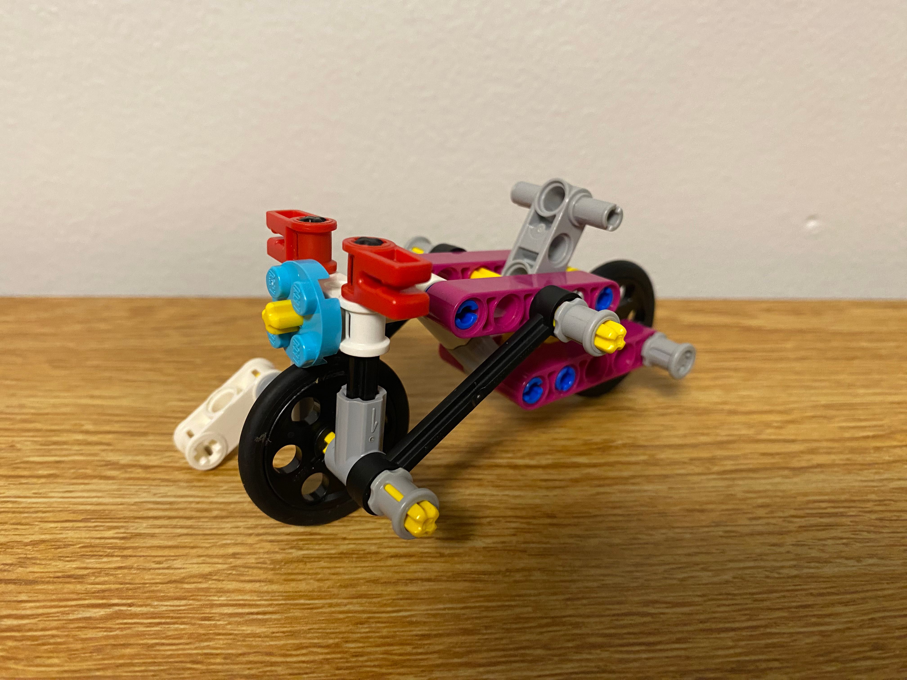
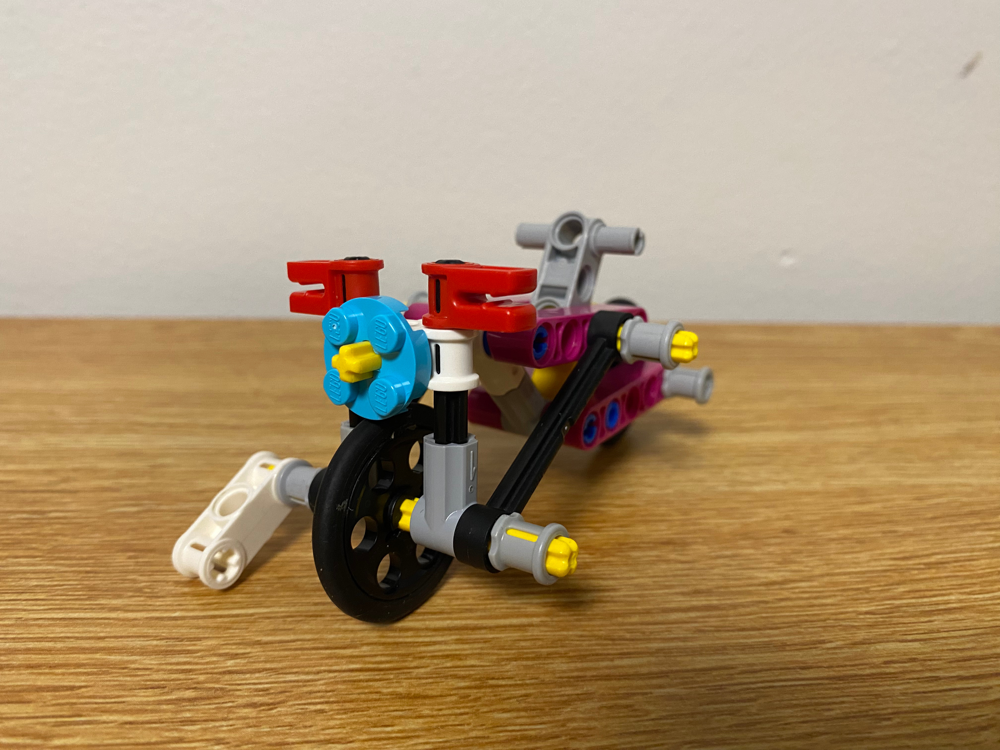
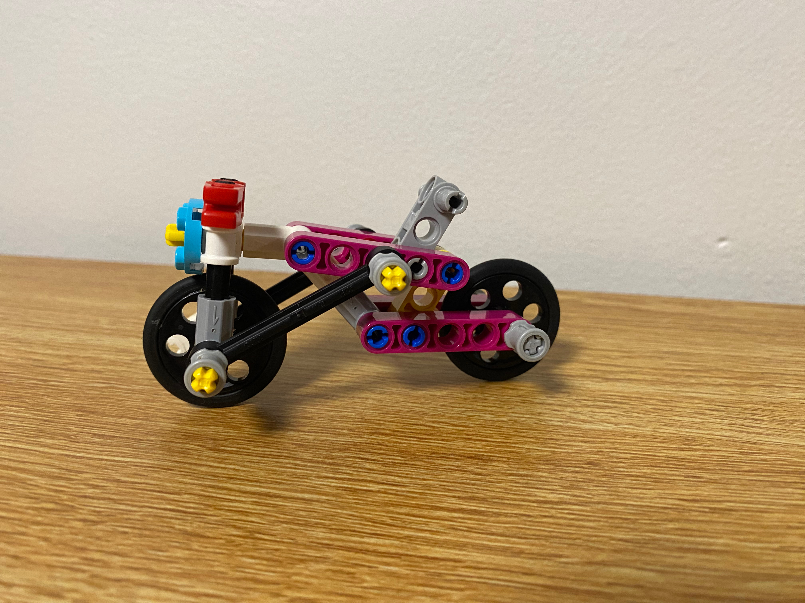

I made a motorcycle because I've always loved the classic look of standard motorcycles. I especially loved seeing them in movies, and I always thought they were awesome for example, in Jurassic World. One thing I wasn't able to incorporate into my design was a turnable handle for the front wheel. I'm sure there was probably a way to include that in the design, but doing so at such a small scale proved very difficult.

